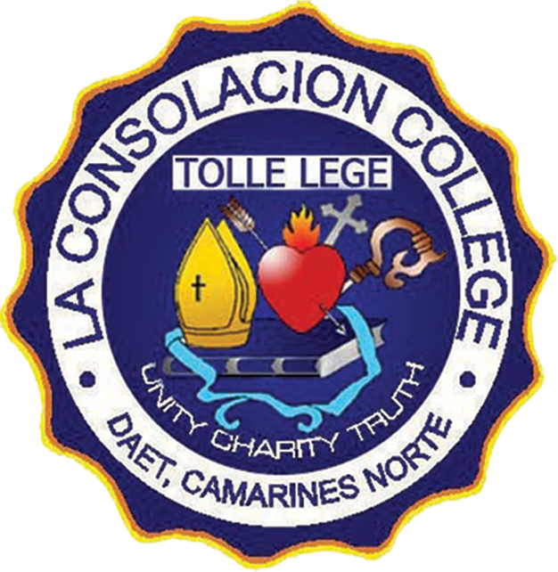
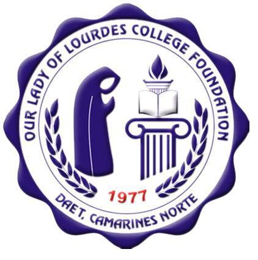
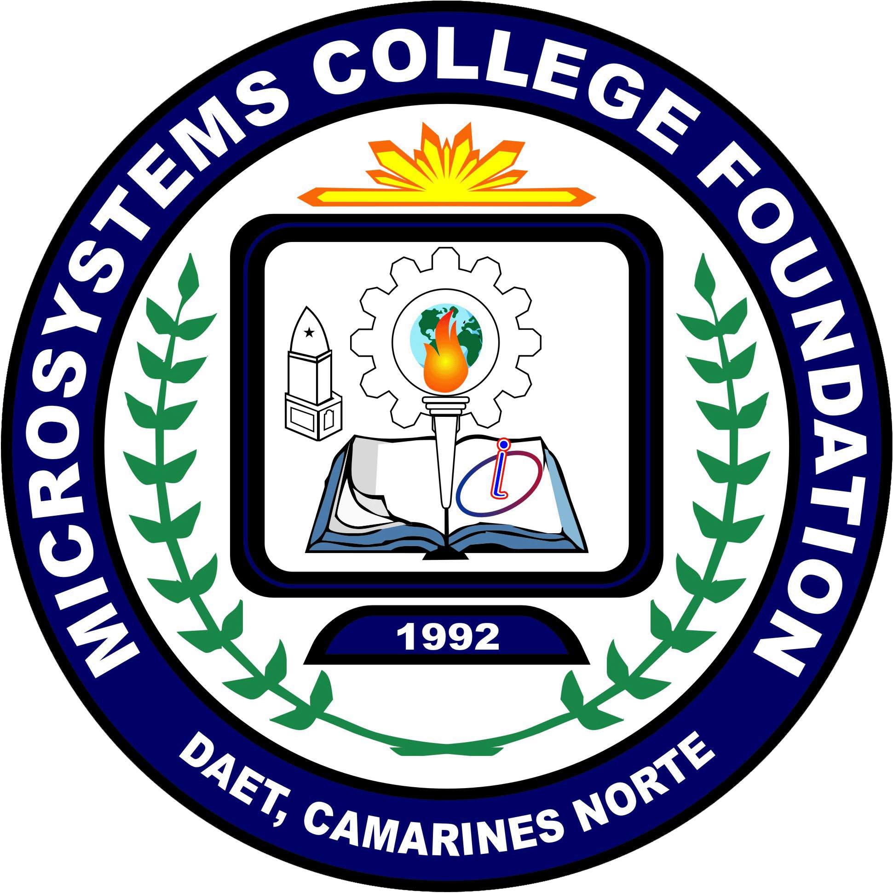
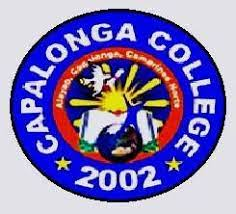

ACLC
Private College
Location: Daet, 2F Guinhawa Blg. Justo Lukban Street cor J. Pimentel Sr. Daet, 4600 Camarines Norte
Course:
2 Years Course:
Associate in Computer Technology
Bachelor of Science in Entrepreneurship
Bachelor of Science in Information Technology
La Consolacion College

Private College
Location: 4X64+JCW, F. Pimentel Ave. Daet, Camarines Norte
Course:
Bachelor of Science in Information Technology
Bachelor of Science in Information System
Bachelor of Science in Computer Science
Bachelor of Science in Nursing
Bachelor of Science in Hospitality Management
Bachelor of Science in Tourism Management
Mabini College
Private College
Location: 4X85+8WF, Gov Panotes Ave. Daet, 4600 Camarines
Norte
Course:
Bachelor of Science in Accounting
Bachelor of Science in Communication
Bachelor of Science in Business Administration
- Major in Operation Management
- Major in Financial Management
Bachelor of Science in Entrepreneurship
Bachelor of Science in Nursing
Bachelor of Science in Education
- Major in Mathematics
- Major in English
- Major in Filipino
- Major in Social Studies
Bachelor of Elementary Education (General)
Bachelor of Early Childhood Education
Bachelor of Physical Education
Bachelor of Culture and Arts Education
Bachelor of Science in Criminology
Bachelor of Science in Computer Science
Two Years Course:
Diploma in Midwifery
Our Lady of Lourdes College Foundation

Private College
Location: WFV+H24, Vinzons Ave. Daet, 4600 Camarines Norte
Course:
Bachelor of Science in Information Technology
Bachelor of Science in Computer Science
Bachelor of Science in Business Administration
Bachelor of Science in Arts and Science
Bachelor of Science in Education
Bachelor of Science in Criminal Justice
Bachelor of Science in Marine Engineering
Bachelor of Science in Nursing and Midwifery
Bachelor of Science in Hotel Restaurant and Management
Bachelor of Science in Medical Training
Northills College of Asia
Private College
Location: 2F Guinto Bldg., Gov Panotes Ave. Daet, Camarines Norte
Course:
Food and Beverage Services NC II
Computer System Services
Housekeeping NC II
Microsystems College Foundation Inc.

Private College
Location: 2F Cuaño Bldg., Carlos II Street, Daet, Camarines Norte
Course:
Computer System Services NC II
Electronics Products Assembly and Servicing NC II
Computer System Services NC II - Mobile Training Program
Electronics Products Assembly and Servicing NC II - Mobile Training Program /p>
Philippine Women's University- CDCEC -Camarines Norte
Private College
Location: 2nd & 3rd Floor Chingson Building, Dasmariñas St. 4600, Daet, Camarines Norte
Course:
2 Years of Hotel and Restaurant Services
1 Year Culinary Arts
7 Months Caregiving NCII
5 Months Cookery NCII
5 Months Front Offices Services NCII
Sta.Elena College- Camarines Norte

Private College
Location: M. Roxas Street 4611 Sta. Elena Camarines Norte
Course:
Bachelor of Elementary Education
Bachelor of Secondary Education Major in English
Bachelor of Science in Criminology
Vineyard Asia Technological College
Private College
Location: Tabanao Bldg., Diversion Road, Camambugan, Daet, Camarines Norte
Course:
Academic Track Accountancy Business and Management (ABM)
Technical Vocational Livelihood Information Communication and Technology (TVL-ICT)
Technical Vocational Livelihood Home Economics (TVL-HE)
Camarines Norte College of Arts and Business-Cancab College Inc.

Private College
Location: Bagong Silang Capalonga Road, Bagong Silang II, 4604 Labo, Camarines Norte
Course:
Bachelor of Science in Agribusiness
Bachelor of Science in Agroforestry
Capalonga College

Public College
Location: Barangay Alayao, Capalonga, Camarines Norte
Course:
Bachelor of Science in Agriculture
- Major in Animal Science
- Major in Crop Science
Bachelor of Science in Elementary Education
Bachelor of Science in Elementary Education with a concentration in Preschool Education
Bachelor of Science in Secondary Education
- Major in English
- Major in Filipino
- Major in Mathematics
- Major in Social Studies
Camarines Norte State College

Public College
Location: F. Pimentel Ave. Daet 4600 Camarines Norte
Courses:
GRADUATE SCHOOL
Master in Public Administration
Master in Business Administration
Master in Manangement
Major in:
Human Resource Management
Educational Planning and Management
COLLEGE OF BUSINESS AND PUBLIC ADMINISTRATION
Bachelor of Science in Business Administration
Major in:
Business Economics
Marketing Management
Human Resource Management
Financial Management
Bachelor in Public Administration
Bachelor of Science in Hospitality
Bachelor of Science in Accountancy
Bachelor of Science in Office Administration
Bachelor of Science in Entrepreneurship
COLLEGE OF ARTS AND SCIENCES
Bachelor of Science in Development Communication
Bachelor of Science in Applied Mathematics
Bachelor of Science in Biology
Bachelor of Arts in English Language Studies
Bachelor of Arts in History
Bachelor of Arts in Sociology
COLLEGE OF ENGINEERING
Bachelor of Science in Civil Engineering
Bachelor of Science in Electrical Engineering
Bachelor of Science in Mechinaical Engineering
INSTITUTE OF COMPUTER STUDIES
Bachelor of Science in Information Technology
Bachelor of Science in System Information
ABAÑO CAMPUS - COLLEGE OF EDUCATION

Public College
Location: J. Lukban Ext., Daet, Camarines Norte
Courses:
Bachelor of Secondary Education
Major in:
English
Flipino
Mathematics
Science
Social Studies
Bachelor of Elementary Education
Bachelor of Technology and Livelihodd Education/li>
Bachelor of Physical Education
INSTITUTE OF FISHERIES AND MARINE SCIENCES

Public College
Location: Barangay San Roque, Mercedes
Courses:
Bachelor of Science in Fisheries
COLLEGE OF AGRICULTURE ANS NATURAL RESOURCES

Public College
Location: Brgy. Talobatib, Labo, Camarines Norte
Courses:
Bachelor of Science in Agriculture
Major in:
Crop Science
Animal Science
Bachelor of Science in Environmental Science
Bachelor of Science in Agricultural and Biosystems/li>
Bachelor of Agricultural Technology
COLLEGE OF TRADES AND TECHNOLOGY

Public College
Location:Orangehill, Jose Panganiban, 4606 Camarines Norte
Courses:
Bachelor of Technical-Vocational Teacher Education
Major in:
Garments and Fashion Design
Food and SErvice Management
Automotive Technology
Electrical Technology
Bachelor of Science in Industrial Technology
Major in:
Automotive Technology
Electrical Technology
Computer Technology
Electronics Technology
RETIRED JUDGE ANTONIO C. ENTIENZA CAMPUS

Public College
Location:Sitio Lobo Brgy. Tabugon Sta. Elena Camarines
Courses:
Bachelor of Secondary Education
Major in:
English
Mathematics/p>
Bachelor in Elementary Education
Bachelor of Science in Entrepneurship